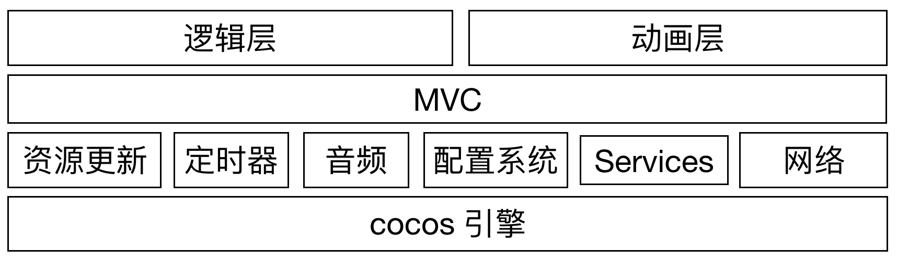
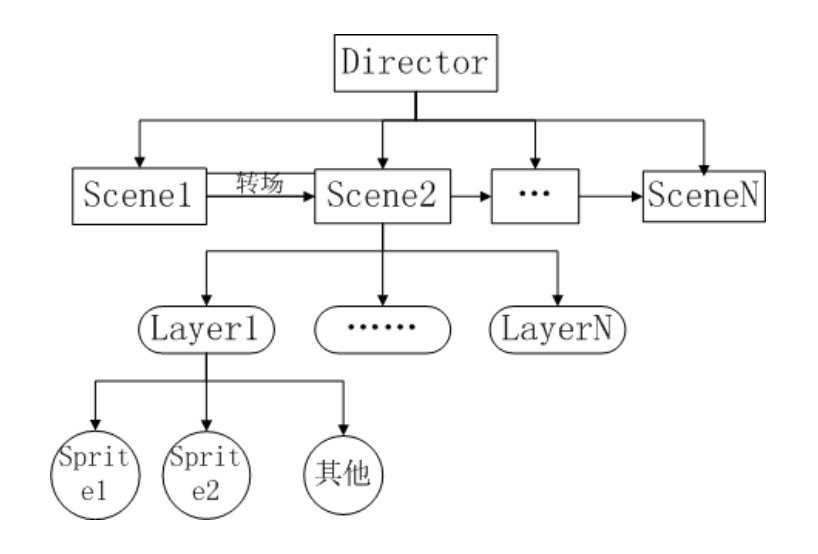
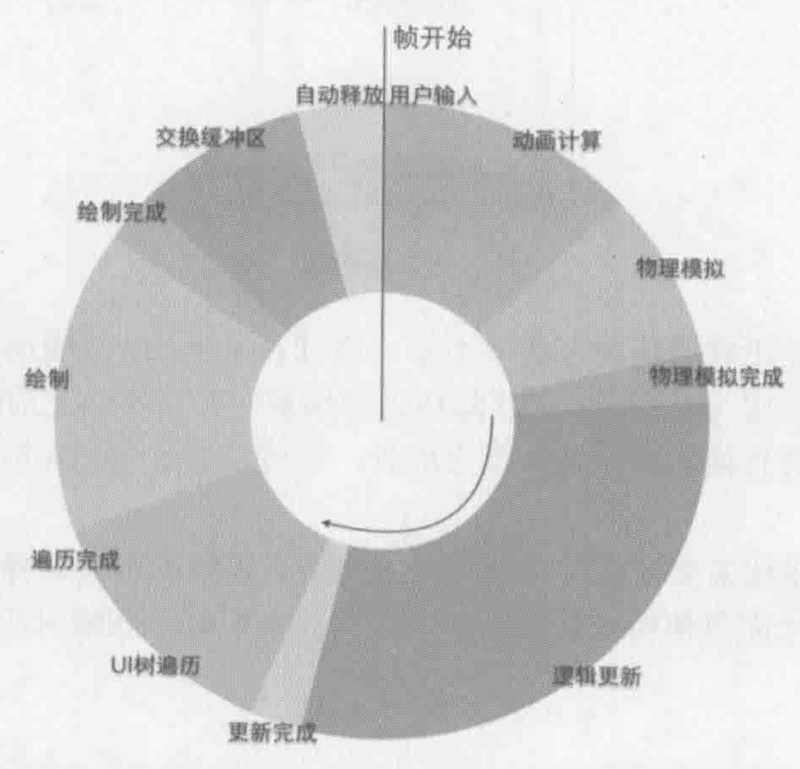

- 00 导读 如何打造高质量的应用？.md
- 00 开篇词 焦虑的移动开发者该如何破局？.md
- 01 崩溃优化（上）：关于“崩溃”那些事儿.md
- 02 崩溃优化（下）：应用崩溃了，你应该如何去分析？.md
- 03 内存优化（上）：4GB内存时代，再谈内存优化.md
- 04 内存优化（下）：内存优化这件事，应该从哪里着手？.md
- 05 卡顿优化（上）：你要掌握的卡顿分析方法.md
- 06 卡顿优化（下）：如何监控应用卡顿？.md
- 06补充篇 卡顿优化：卡顿现场与卡顿分析.md
- 07 启动优化（上）：从启动过程看启动速度优化.md
- 08 启动优化（下）：优化启动速度的进阶方法.md
- 09 I_O优化（上）：开发工程师必备的I_O优化知识.md
- 10 I_O优化（中）：不同I_O方式的使用场景是什么？.md
- 11 I_O优化（下）：如何监控线上I_O操作？.md
- 12 存储优化（上）：常见的数据存储方法有哪些？.md
- 13 存储优化（中）：如何优化数据存储？.md
- 14 存储优化（下）：数据库SQLite的使用和优化.md
- 15 网络优化（上）：移动开发工程师必备的网络优化知识.md
- 16 网络优化（中）：复杂多变的移动网络该如何优化？.md
- 17 网络优化（下）：大数据下网络该如何监控？.md
- 18 耗电优化（上）：从电量优化的演进看耗电分析.md
- 19 耗电优化（下）：耗电的优化方法与线上监控.md
- 20 UI 优化（上）：UI 渲染的几个关键概念.md
- 21 UI 优化（下）：如何优化 UI 渲染？.md
- 22 包体积优化（上）：如何减少安装包大小？.md
- 23 包体积优化（下）：资源优化的进阶实践.md
- 24 想成为Android高手，你需要先搞定这三个问题.md
- 25 如何提升组织与个人的研发效能？.md
- 26 关于编译，你需要了解什么？.md
- 27 编译插桩的三种方法：AspectJ、ASM、ReDex.md
- 28 大数据与AI，如何高效地测试？.md
- 29 从每月到每天，如何给版本发布提速？.md
- 30 数据评估（上）：如何实现高可用的上报组件？.md
- 31 数据评估（下）：什么是大数据平台？.md
- 32 线上疑难问题该如何排查和跟踪？.md
- 33 做一名有高度的移动开发工程师.md
- 34 聊聊重构：优秀的架构都是演进而来的.md
- 35 Native Hook 技术，天使还是魔鬼？.md
- 36 跨平台开发的现状与应用.md
- 37 移动开发新大陆：工作三年半，移动开发转型手游开发.md
- 38 移动开发新大陆：Android音视频开发.md
- 39 移动开发新大陆： 边缘智能计算的趋势.md
- 40 动态化实践，如何选择适合自己的方案？.md
- 41 聊聊Flutter，面对层出不穷的新技术该如何跟进？.md
- 42 Android开发高手课学习心得.md
- Android JVM TI机制详解（内含福利彩蛋）.md
- Android工程师的“面试指南”.md
- Native下如何获取调用栈？.md
- 专栏学得苦？可能你还需要一份配套学习书单.md
- 专栏学得苦？可能是方法没找对.md
- 程序员修炼之路 设计能力的提升途径.md
- 练习Sample跑起来 ASM插桩强化练习.md
- 练习Sample跑起来 唯鹿同学的练习手记 第1辑.md
- 练习Sample跑起来 唯鹿同学的练习手记 第2辑.md
- 练习Sample跑起来 唯鹿同学的练习手记 第3辑.md
- 练习Sample跑起来 热点问题答疑第1期.md
- 练习Sample跑起来 热点问题答疑第2期.md
- 练习Sample跑起来 热点问题答疑第3期.md
- 练习Sample跑起来 热点问题答疑第4期.md
- 结束语 移动开发的今天和明天.md
- 聊聊Framework的学习方法.md
37 移动开发新大陆：工作三年半，移动开发转型手游开发
你好，我是张绍文。15年认识庆文的时候，他还在微信读书负责Android端的性能优化工作。某一天，他跟我说想转岗去尝试一下游戏开发，当时我脑海里浮现了两个想法，一个是游戏部门传说中60个月的年终奖，看起来游戏是一个非常有“钱途”的方向；另外一个还是担忧，抛弃掉Android开发多年的积累，转去完全不熟悉的游戏领域，他是否可以胜任。
两年过去了，庆文以他的个人经历亲身证明了两件事情：- 第一，游戏开发并没有想象中那么困难。当年他是Android版微信读书的技术核心，如今在新的岗位上依然也是技术核心。“一通则百通”，技术是相通的，最珍贵的是我们的学习能力和钻研精神。- 第二，客户端平台知识依然非常重要。手游虽然有非常独立的开发体系，但是它还是运行在Android或者iOS系统之上。App开发需要用到的很多技术，游戏开发也需要用到。作为Android开发，我们一层一层往底层走的优化能力，反而是其他大部分游戏开发所不具备的，也是我们的优势所在。
在我看来，无论移动的未来如何发展，不管是大前端的天下，还是转向手游、IoT、AI、音视频等其他方向，今天我们所熟悉的Android平台知识以及学习这些知识所沉淀下来的能力和方法，都是最宝贵的财富。下面我们一起来看看庆文同学的移动开发转型手游开发的那些事。
你好，我是李庆文，来自腾讯旗下一间手游工作室，应绍文的邀请，在《Android开发高手课》里和你聊聊手游开发那些事。
我在2017年4月，从App客户端开发转岗成为一名“用命创造快乐”的手游客户端开发。在转为手游开发之前，虽然玩游戏会被游戏精美的画面吸引，但是并不清楚游戏是如何将这些精细的画面呈现出来，觉得游戏开发好像一个神秘的组织一样，不知道游戏开发团队的同学每天在做什么。如果你也对游戏开发有些好奇，不知道是不是也有我之前同样的困惑？现在我以一个亲历者的身份，跟你讲讲转向手游开发的那事儿。
揭开手游开发的面纱
一般来说，一个手游项目组包括制作人、策划组、美术组、运营组、程序组、音频组。其中游戏核心部分完全由项目组自己完成，部分美术、音频可以交给外包来完成。
策划组分为玩法策划、数值策划，是整个游戏的灵魂，一个游戏的核心玩法是否好玩、周边系统能否更好地支撑核心玩法，是整个游戏成败的关键。有些团队也会把运营组放到策划组当中，运营同学主要的工作职责是外部合作、策划游戏内的活动、根据活动数据对游戏玩法或者活动进行相应调整，希望可以尽量延长游戏生命周期并提高游戏收入。
美术组包括原画师、视觉设计、2D/3D视觉特效设计，其中负责视觉特效的同学与负责程序的同学沟通较多，主要是因为程序需要与动画配合，比如某个动画播放到某一个关键帧之后，程序要处理某个特定逻辑。
App开发的程序组同学关注的更多是手机系统的架构，希望尽量多了解系统能为App提供的接口或者能力。而手游的程序组同学更多是关注游戏引擎的架构和如何在引擎的基础上优化游戏性能。
下面我以Cocos引擎为例，带你看看手游的开发流程以及手游是如何运行的。
1. 游戏架构
以我的游戏项目为例，游戏整体架构如下图所示。

其中：
资源更新模块让游戏能够不断发布Bugfix和Features。
配置系统提供给策划和运营同学，主要是编辑XLS文件用于配置游戏内的关卡、活动等。策划同学的配置会在游戏编译过程中自动转表，根据配置文件生成Lua文件。
Services管理着游戏内的全部数据。
网络模块负责与后台建立Socket并通信。
游戏内使用MVC模型控制各个游戏内模块的跳转。
在单个功能模块中，逻辑与动画分离，逻辑层产生动画事件，动画层消费动画事件并让游戏内的精灵根据事件执行特定动作。
2. 游戏场景设计
Cocos采用节点树形结构来管理游戏对象，一个游戏可以划分为不同的场景（Scene），一个场景又可以分为不同的层（Layer），一个层又可以拥有任意个精灵（Sprite）。游戏里关卡、周边系统的切换也就是一个一个场景的切换，就像在电影中变换舞台和场地一样，由导演（Director）负责不同游戏场景之间的切换。一个Cocos游戏的基本结构如下：

在同一个场景中的多个精灵可以通过执行动作（Action）来实现缩放、移动、旋转，从而达到让游戏“动起来”的目的。
Cocos引擎中，坐标系X轴向右、Y轴向上，Z轴（Z-Order）垂直于手机屏幕指向屏幕外，由于是2D游戏，所以Z轴只用作控制游戏元素的前后顺序。同一个场景中两个重叠或者部分重叠的 Sprite，Z-Order大的精灵会遮挡住Z-Order小的精灵，相同Z-Order的精灵，后添加到场景中的会遮挡住先添加的。
有了树形结构和Z-Order，就能利用Cocos引擎构建出任意2D游戏场景了。
3. 手游的运行流程
游戏的主Activity在onCreate时候创建一个GLSurfaceView，它继承自View，是引擎用于绘制游戏内容的。同时GLSurfaceView也接受玩家的点击事件，用于引擎与玩家的交互。
GLSurfaceView创建之后，引擎开始执行main.lua脚本，导演调用runWithScene接口，游戏就进入到第一个“场景”中了。GLSurfaceView中维护了一个while循环，循环中发生的事件（比如SurfaceView创建、宽高发生变化等）通过Renderer接口传递给外部。Renderer其中一个接口就是onDrawFrame，Cocos会在onDrawFrame接口实现中根据游戏设置的帧率，每间隔一段事件通知一次导演执行一帧游戏循环。

借用《我所理解的Cocos2d-x》书中的单帧处理流程图片，你可以看到在每帧中：
先响应用户输入，因为用户输入可能影响到当前帧接下来的游戏逻辑。
根据每个精灵设置的动画，计算精灵的位置、缩放等属性。
执行游戏逻辑，比如更新玩家得分、修改当前游戏状态等。在这里开发者依然可以更改精灵的各种属性。
遍历UI树，根据之前对精灵属性的设置，生成绘制命令，交给OpenGL绘制，最后把渲染的内容显示到屏幕上。
游戏与App开发的异同
1.关于热更新
热更新是App开发和游戏开发都避不开的话题，但是App的热更新与游戏的热更新有着本质的区别。App开发的热更新涉及整个系统层面的实现细节，比如我在老东家工作期间实现的热更新框架，需要了解的内容非常多，包括Dex文件的加载过程、SO文件查找过程和APK编译过程的详细细节，每个不小心都可能导致热更新不生效甚至导致严重的外网Bug。
然而使用脚本的游戏引擎是天生支持热更新的。手游热更新，也叫作资源更新，更新内容包括代码、纹理图片、界面等。
以Cocos引擎为例，Cocos引擎的核心是C++实现的，对外提供了JS、Lua接口。业务开发过程中绝大部分代码是Lua代码，只有涉及系统相关接口，比如支付、音频播放、WebView等，才需要写一部分系统相关的代码。Lua代码经过编译之后生成的二进制代码是“.luac”文件，并通过luaL_loadbuffer接口来加载一段“.luac”的文件内容。Cocos引擎在初始化过程中会设置“代码查找路径”，加载Lua代码的时候会挨个遍历每一个被设置进来的路径，直到找到或者找不到对应的“.luac”文件。而热更新只需要下载“.luac”文件，放到优先的查找路径中，游戏重启之后引擎就会优先加载新的代码啦。
当然还有另外一种更为激进的方式，不需要重启游戏就能达到热更新的目的。
Cocos以LuaEngine为入口，执行Lua代码驱动C++部分的图形库、音频库、物理引擎等。LuaEngine缓存了通过luaL_loadbuffer接口加载起来的代码，只要重启整个LuaEngine清理掉缓存的代码，就能在后续需要执行代码的时候去重新加载代码文件。这样就能做到不重启游戏也能达到真正“热”更新的目的。
其实Unity引擎也是类似，可以使用xLua等类似的技术，让Unity引擎也能开心地写Lua脚本。
对于热更新图片，只需要清理掉引擎缓存的图片缓存即可。这样引擎在下次使用该图片渲染界面是，发现在缓存中查找不到该图片，自然就会去加载新的图片了。
2. 游戏也需要优化安装包大小
在App开发过程中，优化安装包的大小是一个不可避免的话题。压缩图片、代码，插件动态下载等众多实现方案也都为大家所熟知。手游安装包大小可能并不像App安装包要求那么严格，热门游戏比如《绝地求生》《王者荣耀》，安装包大小几乎都接近2GB。虽然玩家对游戏安装包大小不是特别在意，但有意识的减小安装包大小也是很有必要的，毕竟安装包大小会影响游戏转化率，进而影响游戏收入。
手游安装包中，图片资源占了安装包体积的绝大部分，以PNG图片为主。通常直接压缩PNG图片是有损压缩，经过游戏引擎渲染，游戏界面会出现很多噪点。这里有一种分离Alpha通道的压缩方案，可以供你参考。32位透明PNG图片包含了四个通道：RGBA，其中每个通道占8 Bit。把RGBA四个通道中的Alpha通道数据拆分出来存储为一张PNG8图片，剩下的RGB数据存储为一张JPG格式图片。JPG格式的图片在保证高压缩率的同时也能保证图片质量，以此达到压缩图片大小的目的。这种方案的压缩率大概在70%左右。
在游戏运行过程中，使用纹理之前先把JPG和PNG8文件都读取到内存，将他们包含的RGB和Alpha数据重新合并后，交给OpenGL用于渲染。这个压缩方案简单易操作，并且运行时不需要额外的第三方库支持。
3. 游戏的性能优化
性能是开发者永远离不开的话题。手游和App开发一样，也需要关注游戏的各方面性能指标，比如内存、帧率等。
内存
纹理压缩，减少纹理占用的内存。我前面提到的安装优化包大小中压缩图片，也有助于减少内存占用。在美术同学能接受的前提下，降低图片深度也是快速优化内存的一个方法。
使用精灵池，尽量复用已经创建的精灵，减少屏幕中精灵创建的个数，及时回收不用的内存。
切换场景时尽快释放上一个场景的无用纹理。
帧率
减少Draw Call。游戏引擎每次准备数据并发送给GPU去渲染的过程，称为一次Draw Call。Cocos把使用相同贴图、blendFunc、Shader的精灵合并到同一个渲染命令中提交给GPU。我们常说的合图就是把很多小图片合并到一张大图片中，这样当屏幕中有多个连续渲染的精灵用到同一个大图，CPU就会（有可能）把它们合并之后统一提交给GPU。另外Cocos合并渲染命令是根据精灵在场景中的顺序来做的，最终的合并效果不一定是最优的。我们可以实现自己更优化的合并逻辑。
减少屏幕内需要渲染的精灵个数。如果屏幕中有“成组”的元素需要绘制，比如排行榜中每个玩家的Item，在Cocos中可以使用CCRenderTexture，把每个“成组”的元素绘制到CCRenderTexture绑定的纹理，然后用CCRenderTexture替代原有的Item。这与Android开发中自己实现View的onDraw函数类似，并且这也是减少Draw Call的一种方式。
分帧。真的遇到CPU密集型的任务时，例如同屏幕确实需要大量精灵，可以把它们拆分在不同帧里，尽量保证游戏内每一帧在规定时间内完成，否则会出现卡帧现象。
App开发转手游开发的思考
刚刚过去的2018年是游戏比较惨淡的一年，游戏版号从暂停审批到现在终于慢慢开始放出，简直是千军万马过独木桥。但从目前来看，2018年确实也像某些大咖说的那样，可能是游戏行业未来几年最好的一年。国内拿不到版号的游戏只能考虑出海来寻求出路，但是出海需要在海外当地运营或者找海外代理。自己运营可能会遇到水土不服，画风或者游戏内容也可能不满足当地玩家的需求；找海外代理，却可能面临连游戏代码都被代理商卖掉的风险。
手游早已经结束了野蛮生长的年代，6年前可能随便一款游戏都可能成为爆款，类似捕鱼达人、保卫萝卜，它们诞生在Android、iOS手机爆发的那几年。而现在的游戏玩家需要的是更新颖的玩法和更加精细的游戏体验。例如MOBA类的《王者荣耀》、SLG类的《乱世王者》，甚至细分领域的《恋与制作人》，也都在各自的玩法上不断打磨，让玩家心甘情愿“氪金”。如果想要转向这个赢者通吃的行业，确实需要谨慎，提前考察好目标团队是否符合你的职业发展、是否有盈利能力，尽量避免踩坑。
1. App开发转手游开发，可行吗？
2018年和2019年，市场对App开发的岗位需求量已经不像几年前那么大，而且也有一些同学也咨询过我App开发转手游开发是否合适。关于这个问题，我的回答是：可以转到手游开发岗位，而且难度并没有想象中那么大。
手游开发跟App开发相比，只不过是换了工作内容，关注的领域不同而已，基本原理是相通的。App开发需要用到的很多技术，游戏开发依然也需要用到，比如卡顿分析、网络、I/O优化。而且游戏的大部分核心逻辑库是与平台无关的，所以不必担心适应不了新的工作内容。下面我来总结一下转到手游开发的优势和劣势。
- 优势
对手机系统有深入了解，能迅速切入一部分游戏团队内的工作内容。比如我刚刚转到手游团队时解决的第一个问题：游戏在Android系统上JNI找不到函数的Crash稳稳占据了每个版本的前三名，版本Crash率由于这个问题而一直保持在1%左右。当时由于团队对系统没有深入了解，所以并没有很好的解决办法。这个问题其实读一遍Android系统查找Native函数的代码，基本就能找到解决方案了。
- 劣势
毕竟是两个不同的开发方向，转方向的同学也需要迎接压力。与毕业后直接进入游戏行业的同学相比，“半路出家”的同学相对缺乏原始技术积累，需要从基础的概念开始学起，比如上面提到的Draw Call、合图、OpenGL、Shader，需要消耗大量精力去学习。所以需要转方向的同学足够自律，主动补齐这些技术短板。
2. 转方向后的技术路线
有些同学说App开发者的技术路线宽，担心手游开发者将来技术路线会越来越窄，将来不好找其他工作。有这个担心是正常的，手游开发岗位的市场需求量比移动开发需求量小太多，但这不应该成为害怕转手游开发的理由。个人觉得需要从一个更宏观的角度看待这两个不同的开发岗位，不要钻在技术的牛角尖里无法自拔。技术通道无风险，而更应该担心的是游戏的政策风险。
小游戏在2017年和2018年真是火了一把，鉴于小游戏入门简单、上手快，想要转方向的同学可以先用小游戏来练手。“麻雀虽小，五脏俱全”，看明白一个小游戏的执行流程之后，相信你对游戏开发也就会有一个感性的认识了。
最后祝各位开发者游戏愉快！
欢迎你点击“请朋友读”，把今天的内容分享给好友，邀请他一起学习。我也为认真思考、积极分享的同学准备了丰厚的“学习加油礼包”，期待与你一起切磋进步哦。
© 2019 - 2023 Liangliang Lee. Powered by gin and hexo-theme-book.